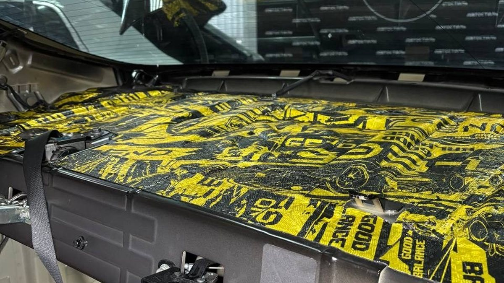

Утро, во дворе минус двенадцать, машина прогревается на автозапуске, капот покрыт инеем. Сосед, проходя мимо, советует: «Утепли капот, быстрее греться будет и тише станет». В интернете то же самое: шумоизоляция капота – первое, что предлагают сделать, потому что это быстро и всё на виду. Вы открываете капот, видите тонкую серую обивку на клипсах и думаете, что вот она, причина всех бед.
На деле шумоизоляция капота делает две полезные вещи: гасит дребезг самой крышки и немного приглушает мотор на холостых, особенно снаружи. Тишину в салоне на трассе она почти не меняет, а машину зимой не греет так, как обещают. Посмотрим, как звук двигателя на самом деле попадает к водителю, что даёт обработка капота, как её делают правильно и что поможет, если цель – тепло.

Как шум мотора попадает в салон
Двигатель шумит во все стороны, но к водителю звук идёт не через капот. Между моторным отсеком и салоном стоит моторный щит – стенка, на которой держатся педали, рулевая колонка и печка. Через него проходят жгуты проводов, тросы, патрубки, рулевой вал, и каждое такое отверстие – путь для звука. Сам щит тоже вибрирует от работы мотора.
Второй путь – площадка под дворниками, откуда печка забирает воздух. Через неё в салон приходит и звук. Третий – тоннель и пол: вибрация от двигателя и коробки через опоры уходит в кузов.
Капот же смотрит вверх, от салона его отделяет лобовое стекло и тот же моторный щит. Звук, отражённый от капота, большей частью уходит наружу и вниз, под машину. Поэтому даже толстый слой материала на крышке меняет звук в салоне меньше, чем ожидают.
Что на самом деле даёт шумоизоляция капота
Обработка капота полезна, если понимать, за что вы платите.
- Пропадает дребезг крышки. Капот – это тонкая наружная панель на каркасе из рёбер. На холостых, особенно у дизеля или на холодном моторе, панель мелко дрожит, а на кочках может звенеть. Вибропоглотитель в ячейках каркаса это успокаивает.
- Тише снаружи. Рядом с машиной меньше слышен мотор на прогреве. Это заметно, когда вы стоите у капота, и соседям под окнами.
- Немного тише на холостых в салоне. Часть звука, отражённого от капота к лобовому стеклу и площадке воздухозаборника, поглощается. На трассе этот эффект теряется в гуле шин и пола.
- Защита краски. Штатная обивка капота защищает лакокрасочное покрытие от нагрева мотором. Если её давно сняли или она развалилась, капот без защиты лучше не оставлять.
Если в машине раздражает именно рокот двигателя при разгоне, гораздо больше даст обработка моторного щита и пола у ног. Эта работа сложнее, требует частичной разборки передней панели, и делать её нужно не каждой машине. Но честный ответ именно такой.
Шумоизоляция под капот: как её делают правильно
Подкапотное пространство – не салон, и материалы для него нужны другие. Порядок работы такой.
1. Снимают штатную обивку капота и сохраняют клипсы. Обивку часто ставят обратно поверх новых слоёв или заменяют материалом похожей формы.
2. Внутреннюю поверхность наружной панели очищают и обезжиривают. Под капотом там бывает масляная пыль, и материал на неё не ляжет.
3. В ячейки между рёбрами каркаса, через технологические окна, клеят вибропоглотитель, рассчитанный на нагрев. Обычный салонный материал от тепла мотора может размягчиться и сползти.
4. Поверх каркаса ставят теплостойкий шумопоглотитель с фольгой или специальный подкапотный материал, который не впитывает масло и воду и не поддерживает горение.
5. Всё крепят на штатные клипсы или штатную обивку, без саморезов в металл.
Отдельно проверяют, удержит ли капот потяжелевшую крышку. Если капот стоит на газовых упорах, лишний вес может привести к тому, что он начнёт опускаться сам. Для капота на штанге это не важно, но слишком тяжёлую крышку неудобно поднимать.

Утеплитель и шумоизоляция капота: греет ли это зимой
Утеплитель шумоизоляция капота – частый запрос перед ярославской зимой, и тут важно не путать две разные вещи.
Шумоизоляция на капоте чуть замедляет остывание мотора после остановки. Но моторный отсек открыт снизу и спереди: через радиатор и под машиной постоянно идёт холодный воздух. Поэтому на скорость прогрева и на то, как быстро потеплеет в салоне, материал на крышке влияет слабо. Сделать капот тише можно, а сделать машину заметно теплее этим – нет.
Что реально влияет на тепло зимой:
- Автоодеяло на двигатель. Его кладут прямо на мотор под капотом. Оно должно быть негорючим, не касаться выпускного коллектора, ремней и вентилятора. Это не шумоизоляция, это отдельная вещь, и её снимают, когда морозы кончаются.
- Утеплитель решётки радиатора. Закрывает часть потока холодного воздуха на трассе. Важно следить за температурой мотора, чтобы не перегреть его в оттепель.
- Предпусковой подогреватель или автономный отопитель. Греет мотор или салон до запуска. Это единственное из перечисленного, что даёт тёплый двигатель и тёплый салон утром без долгого прогрева на холостых.
Если вы ставите автозапуск и думаете, как сократить прогрев, разговор стоит начинать с подогревателя, а не с капота.
Ошибки при обработке капота
- Салонный материал под капотом. Пена с открытыми порами впитывает масло и воду, тяжелеет, а от нагрева может деформироваться.
- Обычный вибропоглотитель без запаса по теплу. Летом в пробке на Московском проспекте под капотом жарко, и такой материал начинает течь и отходить.
- Перекрытые отверстия в каркасе. В рёбрах капота есть отверстия для стока воды. Закрытые наглухо, они оставляют влагу внутри, и каркас ржавеет изнутри.
- Саморезы в крышку. Новые отверстия в капоте – очаги коррозии, а вода с реагентами найдёт их быстро.
- Ждать от капота тишины на трассе. Деньги уходят, гул остаётся, разочарование переносится на шумоизоляцию вообще.
Проверка своей машины за пять минут
Прежде чем что-то покупать, проверьте, есть ли у вашего капота проблема вообще.
1. Заведите холодный мотор и положите ладонь на середину капота. Если чувствуется мелкая дрожь крышки, вибропоглотитель в ячейках поможет.
2. Постучите костяшками по капоту в разных местах. Звонкий пустой звук между рёбрами каркаса – признак, что панель ничем не задемпфирована.
3. Откройте капот и посмотрите на обивку: цела ли она, все ли клипсы на месте, не провисает ли.
4. Послушайте мотор на холостых, стоя у машины, а потом посидите в салоне с закрытыми дверями. Если снаружи шумно, а внутри терпимо, капот решит задачу соседей больше, чем вашу.
Для Ярославля добавьте ещё одно: после зимы загляните под обивку. Если там соль и влага, материал нужен тот, что не боится воды.
Когда капот стоит делать, а когда нет
Делать есть смысл, если:
- крышка дребезжит на холостых или на кочках;
- штатной обивки нет или она развалилась;
- машина с дизелем, и мотор на прогреве слышно на весь двор;
- вы уже делаете салон по зонам и хотите закрыть всё сразу.
Можно отложить, если главная жалоба – гул на трассе, шелест шин или свист ветра. Тогда очередь за полом, арками и уплотнителями, а капот подождёт.
Частые вопросы
Капот сделаю – в салоне станет тише? На холостых немного тише, на трассе почти без изменений. Капот больше влияет на дребезг крышки и звук снаружи. За тишиной в салоне – к полу, аркам и моторному щиту.
Можно поставить материал поверх штатной обивки? Иногда так и делают, если штатная обивка цела и толщина позволяет капоту нормально закрываться. Чаще обивку снимают, клеят слои под ней и возвращают её на место.
На Хавал Н3 шумоизоляция капота нужна? Логика та же, что для любой машины. Откройте капот и посмотрите, что стоит с завода: если обивка есть и цела, а мотор не дребезжит крышкой, капот можно отложить. Если цель – тише на трассе, на Хавал Н3 выгоднее начинать с пола и арок.
Поможет ли шумоизоляция капота быстрее прогреться зимой? Почти нет. Моторный отсек открыт снизу, и тепло уходит туда. Для прогрева работают автоодеяло, утеплитель решётки и предпусковой подогреватель.
Сколько стоит шумоизоляция капота? Цену называют после осмотра. Она зависит от размера капота, того, что стоит с завода, выбранных материалов и того, делаете ли вы вместе с капотом моторный щит.
Где сделать капот в Ярославле
Студия «Звук на Волге», Ярославль, проспект Октября, 82б. Пн–пт 8:30–20:00, сб–вс 10:00–19:00. Подскажем, даст ли капот эффект именно на вашей машине или выгоднее начать с другой зоны. По каждому этапу делаем фотоотчёт каждого слоя материала, а стоимость считаем индивидуально. Если ваша цель – тёплый мотор утром, подберём и установим предпусковой подогреватель или автономный отопитель.
Подробнее и запись: шумоизоляция капота и салона в Ярославле. Телефон +7 902 220-75-55, сообщения в ВК: vk.me/avtostil_yaroslavl.
Студия, которую вы могли знать как «Автостиль», теперь называется «Звук на Волге». Мы обновились и назвались по делу и по городу, а адрес остался прежним.